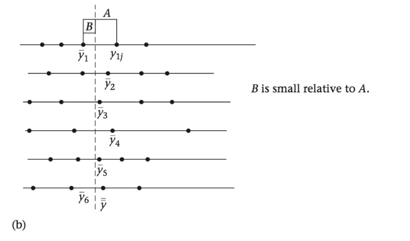
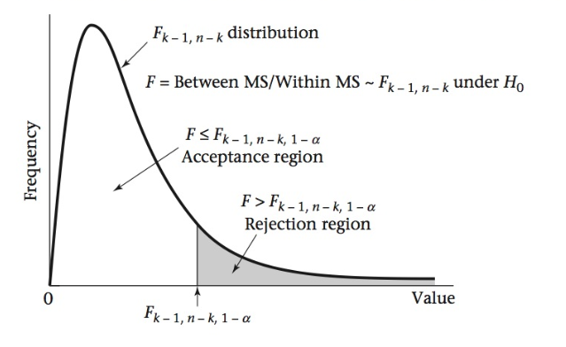
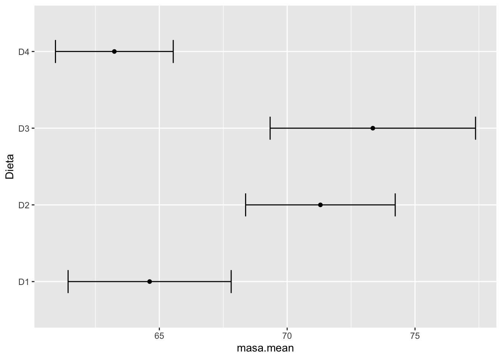
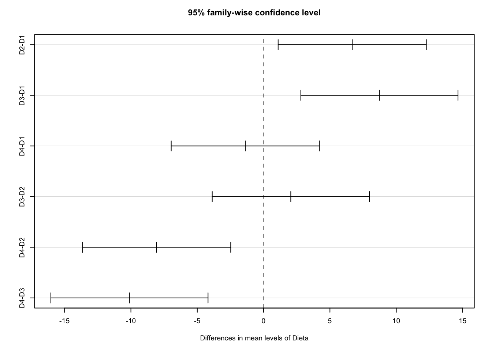

Análisis de Varianza - ANOVA
3.1.Análisis de Varianza
Inferencias sobre las medias de varias poblaciones
En el tema anterior estuvimos haciendo comparaciones de medias entre dos muestras; frecuentemente, sin embargo, necesitamos comparar las medias de más de dos muestras. La metodología estadística utilizada comúnmente para estos casos, es el análisis de varianza (ANOVA).
El análisis de varianza es la herramienta usualmente utilizada cuando queremos analizar el efecto de diferentes grupos (una variable categórica) en una variable medida (respuesta). La técnica del ANOVA es útil tanto para diseños experimentales, como para observaciones o encuestas. La hipótesis nula para este tipo de análisis, para el caso de que tengamos tres grupos, es:
\[H_0 : \mu_A = \mu_B = \mu_C\] Ahora bien, podemos preguntarnos por qué no usamos múltiples pruebas t, y descomponemos la hipótesis anterior en tres hipótesis nulas. En primer lugar, no es práctico si tenemos muchos grupos. Por ejemplo, con cuatro grupos, usando la fórmula de combinaciones, tendríamos seis parejas de \(H_0\) para probar, con ocho grupos tendríamos ¡28! En segundo lugar, al realizar múltiples pruebas t el error tipo I se va incrementando al aumentar el número de pruebas. El ANOVA supera ambos problemas.
3.1.1.Fundamentos del ANOVA
Objetivos
Conocer los fundamentos teóricos y supuestos para realizar el análisis de varianza
Vamos a considerar, de acuerdo a la hipótesis nula anterior, que las muestras provienen de una misma población, y por tanto las medias muestrales representan la media poblacional.
Tenemos el siguiente modelo para describir el valor de cualquier observación, proveniente de varios grupos (\(n_i, i=1...k\)), cada uno con \(n_{ij}\) observaciones:
\[y_{ij} = \mu + \delta_i + e_{ij}\]
donde:
- \(\mu\) representa la media de todas las mediciones de todos los grupos.
- \(\delta_i\) representa la diferencia entre la media del grupo \(n_i\) y la media de todos los grupos, \(\mu\).
- \(e_{ij}\) representa el error aleatorio alrededor de los valores \(\mu + \alpha_i\), de una observación del grupo \(n_i\).
Las Fuentes de Variación para el Análisis de la Varianza
Variabilidad Dentro de Grupos, Variabilidad Entre Grupos, Variabilidad Total
A partir del modelo anterior, podemos rearreglar los términos para diferencias las fuentes de variación que se van a comparar en el análisis de varianza para probar la hipótesis nula de igualdad de las medias de las muestras:
\[y_{ij} - \bar{\bar y} = (\bar y_i - \bar{\bar y}) + (y_{ij} - \bar y_i)\]
donde:
\(y_{ij} - \bar{\bar y}\), representa la desviación de una medición con respecto a la media global, o variabilidad total.
\(\bar y_i - \bar{\bar y}\), representa las desviación de la media de un grupo con respecto a la media global, y es un indicador de la variabilidad entre grupos o varianza del tratamiento.
\(y_{ij} - \bar y_i\), representa la desviación de una medición con respecto a la media de su grupo, y que se conoce como la variabilidad dentro de grupo o varianza del error.
Relación entre Fuentes de Variación y la Hipótesis Nula
Cómo la variabilidad (varianza) permite probar hipótesis sobre las medias
En la ecuación anterior, el término de variabilidad entre grupos debe ser muy cercano a cero para que se compruebe la \(H_0\) de igualdad de las medias de las muestras. Podemos visualizar este planteamiento de la siguiente forma:

Figura 1a. Distribución de la variabilidad dentro (A) y entre grupos (B). B es mucho mayor que A (\(\delta_i \neq 0\)), indicando que al menos una de las muestras no proviene de la misma población de valores.

Figura 1b. Distribución de la variabilidad dentro (A) y entre grupos (B). B es pequeño en comparación con A (\(\delta_i \approx 0\)), indicando que se cumple la \(H_0\) de muestras que provienen de una misma población de valores.
La Distribución F
Probando la hipótesis nula mediante una distribución para la probabilidad de error tipo I.
Para evaluar la hipótesis nula (\(H_0:\mu_A = \mu_B = \mu_C = et c.\)), debemos comparar la varianza del tratamiento (entre grupos) con la varianza del error (dentro de grupos), utilizando un estadístico de razón o proporción, denominado F, y que se calcula para el análisis de varianza como:
\[F = \frac{varianza\ entre\ grupos}{varianza\ dentro\ grupos} = \frac{MS_{entre}}{MS_{dentro}}\]
donde:
\(MS_{entre}\) = media de la suma de cuadrados entre grupos
\(MS_{dentro}\) = media de la suma de cuadrados dentro de grupos
Estos estadísticos son una medida de las respectivas varianzas, y su cálculo se detalla más adelante. La distribución de probabilidades de la razón anterior, se denomina distribución F , y se utiliza para pruebas de hipótesis como se usan la distribución t y \(\chi^2\).
Cuando los tratamientos (grupos) no tienen efecto en la respuesta, la varianza en el conjunto de los datos será similar a la varianza dentro de cada grupo; en este caso la razón que se calcula para el estadístico F será cercana a 1.0, o menor que 1. Por el contrario, cuando hay un efecto importante de uno o más tratamientos, entonces F >> 1.
Obtención del Valor Crítico de F
A partir de la tabla o mediante R
Una vez que obtenemos el valor del estadístico F, calculado con los datos, debemos compararlo con el valor correspondiente a un nivel \(\alpha\), usualmente 0.05, con los respectivos grados de libertad. La distribución F depende de dos tipos de grados de libertad:
\[gl_{entre} = k - 1\]
k: número de grupos \[gl_{dentro} = n - k\]
n: número total de mediciones

Figura 2. Diagrama de la distribución F, mostrando la región de rechazo de la \(H_0\), \(\alpha\).
Con la Tabla de la Distribución F podemos calcular el valor crítico de F para un nivel \(\alpha\) (o p), y los grados de libertad del numerador (k - 1), y del denominador (n - k) del estadístico F.
El valor crítico de F lo podemos obtener utilizando la función qf, o podemos obtener la probabilidad para un valor de F usando pf. Las funciones calculan los valores de probabilidades a la izquierda del valor F.
# valor crítico de F para valores de alfa, glNum, glDenom
alfa <- 0.05
glnum <- 5
glden <- 2
fcrit <- qf(1 - alfa, df1=glnum, df2=glden)
# probabilidad para un valor de F
fval <- 19.3
pizq <- pf(fval, df1=glnum, df2=glden)
sprintf("Valor de F_alfa,gln,gld = %.3f", fcrit)## [1] "Valor de F_alfa,gln,gld = 19.296"sprintf("Probabilidad a la izquierda de F = %.3f", pizq)## [1] "Probabilidad a la izquierda de F = 0.950"
3.1.2.ANOVA de Una Vía con Efectos Fijos
Objetivos
Realizar los cálculos para una prueba de ANOVA de Una Vía con Efectos Fijos
Este es probablemente el tipo más común de ANOVA, en el cual el factor de agrupamiento o tratamiento (variable categórica) es un efecto fijo. Una de las ventajas de este tipo de diseño es su repetibilidad de manera exacta.
Ejemplo 1
En una investigación, 19 cerdos jóvenes fueron asignados, al azar, a cuatro grupos experimentales. Cada grupo se alimentó con una dieta diferente (D1, D2, D3, D4). Luego de ser criados hasta adultos, se midió la masa corporal (kg) de cada animal. Queremos saber si la masa corporal resultó ser igual (\(H_0\)) para las cuatro dietas. (Tomado de Zar, 2014).
\[H_0: \mu_1 = \mu_2 = \mu_3 = \mu_4\] \[H_A: la\ masa\ promedio\ de\ los\ cerdos\ no\ resultó\ igual\ en\ todas\ las\ dietas.\]
| Dieta_1 | Dieta_2 | Dieta_3 | Dieta_4 |
|---|---|---|---|
| 60.8 | 68.7 | 69.6 | 61.9 |
| 67.0 | 67.7 | 77.1 | 64.2 |
| 65.0 | 75.0 | 75.2 | 63.1 |
| 68.6 | 73.3 | 71.5 | 66.7 |
| 61.7 | 71.8 | NA | 60.3 |
Cálculo de la variabilidad en forma de Suma de Cuadrados (SS)
Fórmulas generales y rápidas de los estadísticos para el cálculo final de F
Para propósitos de cálculo del estadístico F a ser usado para la prueba de hipótesis, se calculan los siguientes estimadores de la variabilidad total, dentro de grupos, y entre grupos:
Suma Total de Cuadrados (Total SS)
\[\sum_{i=1}^{k} \sum_{j=1}^{n_i}(y_{ij} - \bar{\bar y})^2\]
Suma de Cuadrados Dentro de Grupos (Within SS)
\[\sum_{i=1}^{k} \sum_{j=1}^{n_i}(y_{ij} - \bar y_i)^2\]
Suma de Cuadrados Entre Grupos (Between SS)
\[\sum_{i=1}^{k} \sum_{j=1}^{n_i}(\bar y_i - \bar{\bar y})^2\]
Cálculo “rápido” de ‘Between SS’ y ‘Within SS’
\[Between\ SS = \sum_{i=1}^k n_i \bar y_{i}^2 - \frac{y..^2}{n}\] \[Within\ SS = \sum_{i=1}^k (n_i - 1)s_i^2\]
donde:
\(y..\) es la suma de todas las observaciones de todos los grupos.
\(k\), es el número de grupos.
\(n\), el número total de observaciones de todos los grupos.
\(s_i^2\), la varianza ( de la muestra) de cada grupo.
Cálculo del estadístico F
Primero debemos calcular ‘Between MS’ y ‘Within MS’:
\[Between\ MS = \frac{Between\ SS}{k - 1}\]
\[Within\ MS = \frac{Within\ SS}{n - k}\]
y el estadístico F calculado:
\[F = \frac{Between\ MS}{Within\ MS}\]
La siguiente tabla resume los cálculos necesarios para obtener el estadístico F:

Una vez obtenido el estadístico F con los datos, procedemos a buscar el valor crítico de F para el nivel de significancia \(\alpha\) establecido, con k - 1 grados de libertad en el numerador y n - k grados de libertad del denominador.
Cálculos con los datos del Ejemplo 1
Cálculos manuales con R (también se pueden realizar con Excel o calculadora científica)
# datos
D1 <- c(60.8,67,65,68.6,61.7)
D2 <- c(68.7,67.7,75,73.3,71.8)
D3 <- c(69.6,77.1,75.2,71.5)
D4 <- c(61.9,64.2,63.1,66.7,60.3)
# lista
cerdos <- list(Dieta_1 = D1, Dieta_2 = D2, Dieta_3 = D3, Dieta_4 = D4)
# data frame
cerditos <- as.data.frame(lapply(cerdos, `length<-`, max(sapply(cerdos, length))))
library(kableExtra)
#tamaño de muestra n_i
n1 <- length(D1)
n2 <- length(D2)
n3 <- length(D3)
n4 <- length(D4)
df.n <- data.frame(n1,n2,n3,n4)
kable(df.n, format = "markdown")| n1 | n2 | n3 | n4 |
|---|---|---|---|
| 5 | 5 | 4 | 5 |
#sumatoria de grupos i
sumX1j <- sum(D1)
sumX2j <- sum(D2)
sumX3j <- sum(D3)
sumX4j <- sum(D4)
df.sumX <- data.frame(sumX1j,sumX2j,sumX3j,sumX4j)
kable(df.sumX, format = "markdown")| sumX1j | sumX2j | sumX3j | sumX4j |
|---|---|---|---|
| 323.1 | 356.5 | 293.4 | 316.2 |
#media por grupo i
Xbar1 <- mean(D1)
Xbar2 <- mean(D2)
Xbar3 <- mean(D3)
Xbar4 <- mean(D4)
df.Xbar <- data.frame(Xbar1,Xbar2,Xbar3,Xbar4)
kable(df.Xbar, format = "markdown")| Xbar1 | Xbar2 | Xbar3 | Xbar4 |
|---|---|---|---|
| 64.62 | 71.3 | 73.35 | 63.24 |
#suma de todas las mediciones
sumXij <- sum(df.sumX[1,])
#número total de mediciones
N <- sum(df.n[1,])
#media global
TotalXbar <- sumXij/N
df.Total <- data.frame(sumXij,N,TotalXbar)
kable(df.Total, format = "markdown")| sumXij | N | TotalXbar |
|---|---|---|
| 1289.2 | 19 | 67.85263 |
#varianza de grupos i
varX1j <- var(D1)
varX2j <- var(D2)
varX3j <- var(D3)
varX4j <- var(D4)
df.varX <- data.frame(varX1j,varX2j,varX3j,varX4j)
#Total SS
TotalSS <- sum((cerditos - TotalXbar)^2, na.rm = TRUE)
#Group SS
GroupSS <- sum(df.n[1,]*(df.Xbar[1,]^2)) - (sumXij^2)/N
#Error SS
ErrorSS <- sum((df.n[1,] - 1)*df.varX[1,])
df.SS <- data.frame(TotalSS,GroupSS,ErrorSS)
kable(df.SS, format = "markdown")| TotalSS | GroupSS | ErrorSS |
|---|---|---|
| 479.6874 | 338.9374 | 140.75 |
#grados de libertad y MS y F
v.groups <- length(df.n) - 1
v.error <- N - length(df.n)
GroupMS <- GroupSS/v.groups
ErrorMS <- ErrorSS/v.error
Fcalc <- GroupMS/ErrorMS
Falfa <- qf(0.95,v.groups,v.error)
Pr <- 1 - pf(Fcalc,v.groups,v.error)
df.prueba <- data.frame(v.groups,v.error,GroupMS,ErrorMS,Fcalc,Falfa,Pr)
kable(df.prueba, format = "markdown")| v.groups | v.error | GroupMS | ErrorMS | Fcalc | Falfa | Pr |
|---|---|---|---|---|---|---|
| 3 | 15 | 112.9791 | 9.383333 | 12.0404 | 3.287382 | 0.000283 |
Cálculos con la función aov de R
#data frame con factor Dieta
df.cerdos <- data.frame(Dieta=c(rep("D1", times=length(D1)),
rep("D2", times=length(D2)),
rep("D3", times=length(D3)),
rep("D4", times=length(D4))),
masa=c(D1, D2, D3, D4))
analisis <- aov(masa ~ Dieta, df.cerdos)
summary(analisis)## Df Sum Sq Mean Sq F value Pr(>F)
## Dieta 3 338.9 112.98 12.04 0.000283 ***
## Residuals 15 140.8 9.38
## ---
## Signif. codes: 0 '***' 0.001 '**' 0.01 '*' 0.05 '.' 0.1 ' ' 1En conclusión, al resultar un valor de F calculada mayor que el valor de F crítico, para \(\alpha = 0.05\), podemos rechazar la hipótesis nula de igualdad de medias entre los cuatro tratamientos. Igualmente, la prueba con la función aov en R, mostró una probabilidad de error tipo I menor que el nivel de significancia de \(\alpha = 0.05\), por lo cual podemos rechazar la \(H_0\).
3.1.3.Comparaciones Múltiples
Objetivos
Determinar el o los tratamientos que difieren entre sí
Pruebas post-hoc
El análisis de varianza nos indica, para cierto nivel de probabilidad, si un factor (o más de uno) produce desviaciones de un valor medio global; sin embargo no nos indica cuál o cuáles niveles del factor son los determinantes en la desviación.
Gráfica con intervalos de confianza
Mediante la siguiente gráfica, de medias e intervalos de confianza (95%), podemos hipotetizar cuáles dietas son diferentes entre sí y cuáles no.
library(plyr)## ------------------------------------------------------------------------------## You have loaded plyr after dplyr - this is likely to cause problems.
## If you need functions from both plyr and dplyr, please load plyr first, then dplyr:
## library(plyr); library(dplyr)## ------------------------------------------------------------------------------##
## Attaching package: 'plyr'## The following object is masked from 'package:purrr':
##
## compact## The following objects are masked from 'package:dplyr':
##
## arrange, count, desc, failwith, id, mutate, rename, summarise,
## summarizelibrary(ggplot2)
ic.dietas <- ddply(df.cerdos, "Dieta", plyr::summarize,
masa.mean=mean(masa), masa.sd=sd(masa),
Lenght=NROW(masa),
tfrac=qt(p=.95, df=Lenght-1),
Lower=masa.mean - tfrac*masa.sd/sqrt(Lenght),
Upper=masa.mean + tfrac*masa.sd/sqrt(Lenght)
)
ggplot(ic.dietas, aes(x=masa.mean, y=Dieta)) + geom_point() + geom_errorbarh(aes(xmin=Lower, xmax=Upper), height=.3)
Prueba de Tukey
Para poder determinar si las diferencias específicas entre los niveles de los factores son significativas, debemos utilizar las llamadas pruebas post-hoc o procedimientos de comparaciones múltiples (MCP).
Utilizaremos la prueba de Tukey para probar cuáles son las dietas del Ejemplo que se diferencian entre si.
library(agricolae)
posthoc <- TukeyHSD(analisis)
posthoc## Tukey multiple comparisons of means
## 95% family-wise confidence level
##
## Fit: aov(formula = masa ~ Dieta, data = df.cerdos)
##
## $Dieta
## diff lwr upr p adj
## D2-D1 6.68 1.096263 12.263737 0.0168421
## D3-D1 8.73 2.807553 14.652447 0.0034914
## D4-D1 -1.38 -6.963737 4.203737 0.8906642
## D3-D2 2.05 -3.872447 7.972447 0.7530266
## D4-D2 -8.06 -13.643737 -2.476263 0.0041505
## D4-D3 -10.11 -16.032447 -4.187553 0.0009497par(cex = 0.6)
plot(posthoc)
3.1.4.Supuestos para el ANOVA y Alternativas
Objetivos
Determinar el cumplimiento de los supuestos para el ANOVA y conocer las alternativas de pruebas de hipótesis cuando no se cumplen
La prueba de ANOVA, al igual que la prueba t, asume una distribución normal de los datos, y homocedasticidad (homogeneidad de varianzas). Por lo tanto, antes de continuar con otras pruebas es importante primero determinar si los datos cumplen con estos supuestos.
Prueba de normalidad
La conocida prueba de Shapiro-Wilk
A continuación examinaremos gráficamente si los datos tienen una distribución normal, usando una gráfica de cuantiles-cuantiles (‘Q-Q plot’):
library(EnvStats)
qqPlot(df.cerdos$masa, add.line = TRUE, points.col = "blue", line.col = "red", )
A continuación la prueba de Shapiro-Wilk para normalidad, con una hipótesis nula de que los datos se ajustan a la distribución normal:
shapiro.test(df.cerdos$masa)##
## Shapiro-Wilk normality test
##
## data: df.cerdos$masa
## W = 0.95808, p-value = 0.5352No podemos rechazar la hipótesis nula con esta probabilidad (error tipo I), y aceptamos que los datos tienen una distribución normal.
Homogeneidad de varianza
Prueba de Levene
Para la homogeneidad de varianza realizamos la prueba de Levene, que tiene una hipótesis nula de varianzas iguales:
library(car)
leveneTest(masa ~ Dieta, data = df.cerdos)## Levene's Test for Homogeneity of Variance (center = median)
## Df F value Pr(>F)
## group 3 0.4508 0.7205
## 15No podemos rechazar la hipótesis nula con esta probabilidad (error tipo I), y aceptamos que los datos por grupo tienen homogeneidad de varianza.
Remedios cuando no se cumplen los supuestos
Transformaciones
Un posible remedio en el caso de que no se cumpla alguno de los supuestos anteriores, es el procedimiento de transformación, el cual envuelve realizar una operación matemática en todos y cada uno de los datos. A continuación algunos ejemplos comunes de transformaciones; x se refiere al valor a transformar, y x’ al valor transformado.
Transformación Logarítmica
Se usa a menudo en ANOVA y regresión (veremos más adelante) y puede servir para corregir cuando no se cumple la homogeneidad de varianza. Se utilizan logaritmos naturales o base 10, y cuando hay ceros en los datos, se añade 1:
\[x' = log(x + 1)\]Transformación Raíz Cuadrada
Utilizada cuando los datos son conteos (valores enteros), y puede corregir falta de cumplimiento con la normalidad y/o la homogeneidad de la varianza:
\[x' = \sqrt x\]Transformación Arcoseno de la Raíz Cuadrada
Las proporciones o porcentajes tienden a ser no-normales, con colas comprimidas. La función arcoseno (\(sin^{-1}\)) se puede utilizar en ambos casos:
para proporciones:
\[x' = arcsin(\sqrt{x})\]para porcentajes:
\[x' = arcsin(\sqrt{x/100})\]
Luego de realizar la transformación que corresponda a los datos, se vuelven a realizar las pruebas de los supuestos, y si se cumplen se puede realizar el procedimiento de ANOVA y probar la hipótesis. Si al final se quieren mostrar los valores en su escala original, se realiza una tranformación inversa.
Alternativa No-Paramétrica al ANOVA de Una Vía
La prueba de Kruskal-Wallis
Cuando las transformaciones no proveen una solución a la falta de normalidad, ni a la heterogeneidad de varianzas de los grupos, existen alternativas no-paramétricas como la prueba de Kruskal-Wallis. Al igual que otras pruebas no-paramétricas, como Wilcoxon o U-Mann-Whitney, los datos se ordenan de menor a mayor en cada grupo y se les asigna un rango empezando por uno, y cuando los valores son iguales, se les asigna un rango equivalente al promedio de los rangos que les correspondería si fueran diferentes.
Ejemplo 2
En la siguiente tabla se muestran los valores de tiempo de copulación (segundos) de parejas de saltamontes machos y hembras, sometidos a cuatro tratamientos (A, B, C, D). Queremos determinar si los tratamientos determinan tiempos diferentes de copulación en los saltamontes; la \(H_0\) sería que no hay ningún efecto diferencial de los tratamientos en los tiempos de copulación.
| Trat A | Trat B | Trat C | Trat D |
|---|---|---|---|
| 9 | 30 | 3900 | 5 |
| 3 | 30 | 10800 | 9 |
| 10 | 480 | 28900 | 20 |
| 200 | 900 | 3600 | 180 |
| 1 | 2 | 200 | 15 |
| 2 | 1 | 120 | 20 |
| 21 | 5400 | 500 | 2 |
| 720 | 1500 | 600 | 17 |
| 1500 | 480 | 1980 | 30 |
| 60 | 3 | 160 | 8 |
Estos datos no cumplen con los supuestos de normalidad ni homogeneidad de varianza, pero la hipótesis nula sobre la no diferencia entre los tratamientos puede ser probada con la prueba no-paramétrica Kruskal-Wallis. Luego de ordenar los datos y asociarles un valor de rango, según las reglas indicadas, podemos calcular el estadístico de la prueba, conocido como H:
\[H = \frac{12}{n_t(n_t + 1)}(\sum \frac{(\sum R_i)^2}{n_i}) - 3(n_t + 1))\]
donde:
\(R_i\): rango de cada valor en grupo i
\(n_t\): número total de mediciones
\(n_i\): número de mediciones en el grupo i
Para probar la significancia de H se utiliza la distribución \(\chi^2\) con un número de grados de libertad del número de grupos menos 1.
Con los datos del ejemplo se obtiene un valor de H = 14.273, y el valor crítico de \(\chi^2\) para \(\alpha\) = 0.05, y grados de libertad = 4 - 1, es de 7.81, por lo tanto podemos rechazar la \(H_0\). Podemos concluir que el tiempo promedio (mediana) de cópula de las parejas de saltamonte resulto ser diferente en al menos uno de los tratamientos.
Utilizando R podemos realizar la prueba mediante la función kruskal.test.
kruskal.test(time ~ Treatment, data = tabla_salta)##
## Kruskal-Wallis rank sum test
##
## data: time by Treatment
## Kruskal-Wallis chi-squared = 14.294, df = 3, p-value = 0.002532
3.1.5.Otros Diseños de ANOVA
- Efectos Aleatorios
- Diseño de Bloques Aleatorizados
- ANOVA con dos factores
- ANOVA con repeticiones
- ANCOVA
- MANOVA